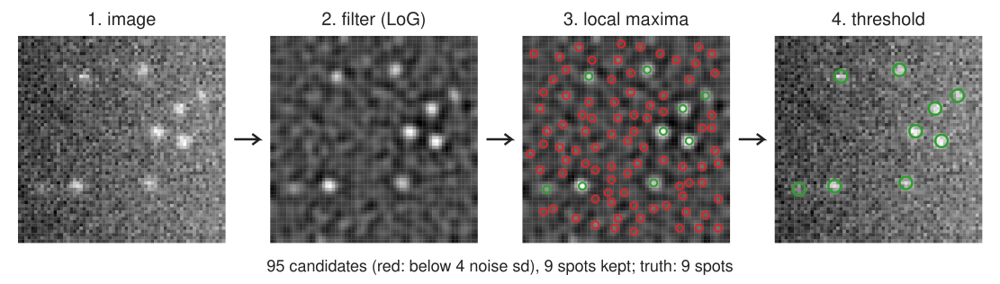
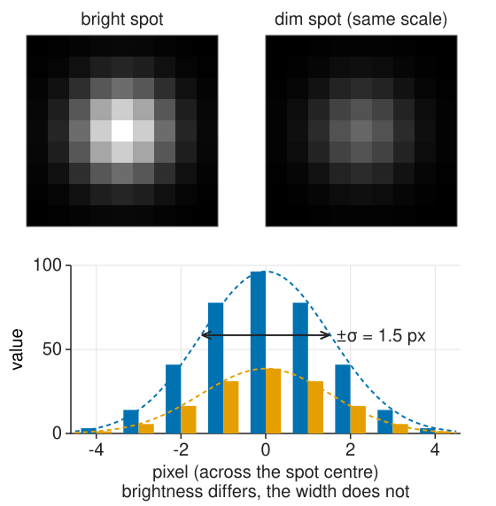
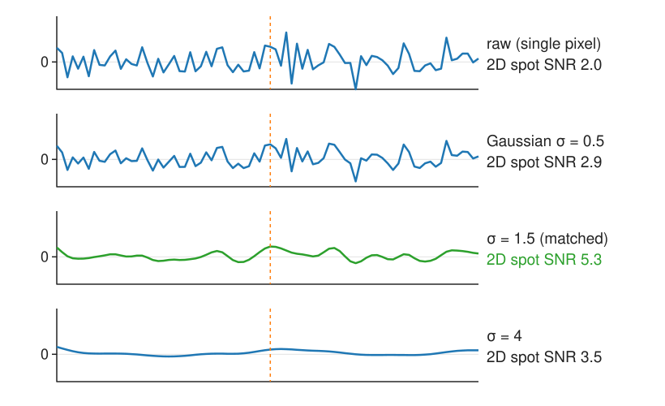
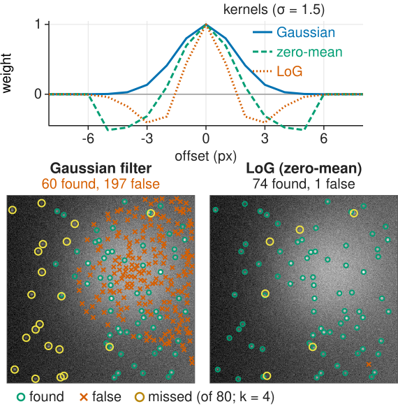
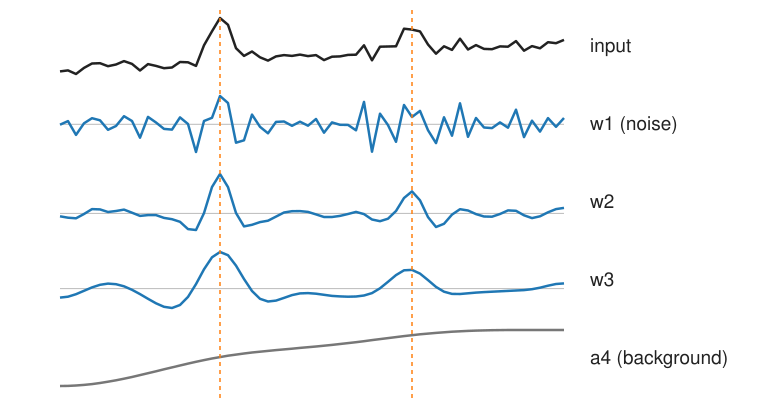
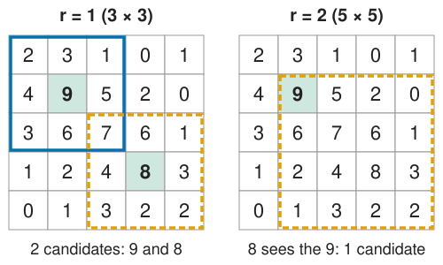

Spots, particles, points of light: mRNA molecules, vesicles, beads, single fluorophores, stars. The output of spot detection is a list of points, not a mask.
A spot is a copy of the PSF: one known size.
Filter: the best linear filter for a known spot in noise is the spot itself (the matched filter).
Background: make the filter zero-mean. That is a centre–surround filter, close to LoG/DoG.
The à trous detector: spots persist across scales, noise does not.
Local maxima: one candidate per spot, and how to choose the window.
Next units: which candidates are real (thresholds), where exactly they are (sub-pixel fitting), crowded spots and evaluation.
Slides titled The math give the formulas and proofs; the ideas are complete without them.
The task: a list of points

Filter: make each spot stand out from noise and background.
Local maxima: one candidate per spot (and many in the noise).
Threshold: keep the candidates that are unlikely to be noise (next unit).
Refine: measure each position to a fraction of a pixel (unit 3).
Each detection: position (x, y), brightness, a score. That list is the input for counting, tracking, colocalisation of spots.
A spot is a copy of the PSF
Recall from the image formation day (the PSF unit): a point of light is imaged as the PSF, close to a Gaussian of width \sigma \approx 0.21\,\lambda/\mathrm{NA} (78 nm at NA 1.4 and λ = 520 nm).
In pixels: typically σ ≈ 1 to 2 pixels (the camera samples the PSF at about Nyquist).
So unlike the blobs of the edges day, spots have one known size. No search over scales is needed: we know which σ to use.
Brightness differs from spot to spot; the shape does not.
If you have not taken the image formation day: simply take “a spot is a small Gaussian of known width σ” as the model.

Why filter: collect the spot’s signal
A single pixel is noisy. A spot spreads its light over about \pi\sigma^2 pixels, so a weighted average over the spot collects its signal while the noise averages out.

Spot of amplitude 20 (peak), noise sd 10, σ = 1.5: a single pixel has SNR 2.
Weighting the pixels with the spot’s own shape: SNR 20\sqrt{\pi \cdot 1.5^2}/10 \approx5.3.
Narrower (σ = 0.5): 2.9, noise left. Wider (σ = 4): 3.5, it averages in pure noise.
Matched filter: to find a known shape in white noise, correlate the image with that shape.
The math: the matched filter
Response of a filter \mathbf w at a spot A\mathbf p (shape \mathbf p, amplitude A) in white noise \mathbf n of variance \sigma_n^2:
r = \sum_k w_k (A p_k + n_k), \qquad \text{signal } A\,\mathbf w^\top\mathbf p, \qquad \text{noise sd } \sigma_n\|\mathbf w\|.
\mathrm{SNR}(\mathbf w) = \frac{A\,\mathbf w^\top\mathbf p}{\sigma_n\|\mathbf w\|} \;\le\; \frac{A\,\|\mathbf p\|}{\sigma_n} \quad\text{(Cauchy–Schwarz), with equality iff } \mathbf w \propto \mathbf p.
For a Gaussian spot of peak 1: \|\mathbf p\|^2 = \sum_k e^{-r_k^2/\sigma^2} \approx \int e^{-r^2/\sigma^2}\,dA = \pi\sigma^2, so \mathrm{SNR}_\text{max} = A\sqrt{\pi\sigma^2}/\sigma_n.
Coloured (correlated) noise: whiten first, then match (the filter becomes \Sigma^{-1}\mathbf p).
The math: noise after filtering
White noise of variance \sigma_n^2 through a kernel \mathbf w has variance \sigma_n^2\sum_k w_k^2 (recall the Canny unit).
For a normalised 2D Gaussian of width \sigma_f, w(\mathbf x) = \frac{1}{2\pi\sigma_f^2}e^{-|\mathbf x|^2/2\sigma_f^2}:
At \sigma_f = 1.5: 0.188\,\sigma_n. The next unit thresholds the filtered image in units of exactly this number.
Try it: spots in 1D
Background: make the filter zero-mean
Real images have a smooth background: uneven illumination, autofluorescence. A Gaussian filter passes it unchanged, so “bright after filtering” also means “on a bright background”.
Subtract the local mean from the template: spot shape minus its average over a small window. The kernel sums to zero, so a constant background gives zero response.
That is a centre–surround filter: positive centre, negative ring. It is (almost) the LoG/DoG of the edges day at σ ≈ spot σ.
Recall (scale space): a Gaussian spot of width s gives the strongest normalised LoG response at σ = s. Spots of one size need one σ.
Alternatives: subtract a heavily blurred copy of the image, or a white top-hat (morphology day) before the Gaussian.
Fast approximation: a box centre minus a box surround (integral images).

The math: the matched filter with unknown background
Model: I_k = A p_k + B + n_k with an unknown constant B in the window. A filter that ignores B must satisfy \sum_k w_k = 0. Maximise
Write \mathbf p = \bar p\,\mathbf 1 + (\mathbf p - \bar p\,\mathbf 1). For \mathbf w \perp \mathbf 1 only the second part counts: \mathbf w^\top\mathbf p = \mathbf w^\top(\mathbf p - \bar p\mathbf 1), and Cauchy–Schwarz gives
\mathbf w \propto \mathbf p - \bar p\,\mathbf 1 \qquad\text{(projection onto the zero-sum subspace)}.
The price: \|\mathbf p - \bar p\mathbf 1\| < \|\mathbf p\|, a slightly lower SNR (2.33 instead of 2.66 per unit amplitude and noise for σ = 1.5 in a 11 × 11 window).
The à trous detector
Blur repeatedly with the small kernel (1, 4, 6, 4, 1)/16, each time with the taps spread twice as far apart (“with holes”; no downsampling, every level keeps the full image size). Differences of consecutive blurs are band-pass images w_1, w_2, \dots: a DoG stack.

Noise lives mainly in w_1; spots of 1–2 px in w_2–w_3; the background in the last blur.
Keep each w_j only where it exceeds k\hat\sigma_j (its own noise level, k \approx 3), then multiply the kept levels: a spot survives only if it is present at every chosen scale.
Robust to uneven background by construction. The wavelet view of this transform belongs to the wavelets elective.
The math: à trous
With h_j = the B3 kernel \tfrac1{16}(1, 4, 6, 4, 1) dilated by 2^{j-1} (taps at 0, \pm 2^{j-1}, \pm 2^j), applied along rows and columns:
Telescoping: I = a_J + \sum_{j=1}^J w_j exactly (as the Laplacian pyramid of the edges day, without downsampling).
Noise per level: \hat\sigma_j = \mathrm{MAD}(w_j)/0.6745 (next unit).
Multiscale product: P(\mathbf x) = \prod_{j \in S} \tilde w_j(\mathbf x), \tilde w_j = w_j\,[w_j > k\hat\sigma_j]; candidates are local maxima of P > 0.
Local maxima: one candidate per spot
A pixel is a candidate if it is the largest in its window of radius r (a (2r+1) \times (2r+1) square).

r = 1 (3 × 3): the 9 and the 8 are candidates.
r = 2 (5 × 5): the 8 sees the 9 in its window: one candidate.
As a picture: compute the maximum filter (grey dilation, morphology day) and keep the pixels where image = maximum filter.
Plateaus (equal neighbours, e.g. after rounding to integers): keep one pixel per plateau.
Choosing r: about the smallest distance you expect between two real spots. Too small: several candidates on one noisy spot. Too large: a dim spot next to a bright one is lost. Alternative: h-maxima (morphological reconstruction) keep peaks by their height above the saddle to a higher peak, whatever the distance.
The math: local maxima
With B_r the (2r+1)^2 square (or a disk) and \oplus grey dilation, (f \oplus B_r)(\mathbf p) = \max_{\mathbf q \in B_r} f(\mathbf p + \mathbf q):
M_r = \{\mathbf p : f(\mathbf p) = (f \oplus B_r)(\mathbf p)\} \quad\text{plus a tie rule (keep the first pixel of a plateau, in raster order).}
M_r shrinks as r grows: M_{r+1} \subseteq M_r.
h-maxima: the dynamic (prominence) of a maximum is its height minus the highest saddle on any path to a higher maximum; h-maxima keep maxima with dynamic \ge h. Computed by reconstruction: f - \mathrm{R}_f(f - h).
The same operation everywhere
“Keep the local maximum, suppress its neighbours” is one of the course’s recurring operations. Only the neighbourhood and the score change:
Image libraries call these “peak local max”, “LoG/DoG blob detection” or “wavelet spot detection”.
Where this leads
Next unit: which candidates are real? A threshold in units of the noise, and how many false spots per image it lets through.
Unit 3: the position of each spot to a fraction of a pixel, with an error bar.
Unit 4: spots that overlap, and how to score a detector against ground truth.
The tracking day links these detections over time.
Summary
Spot detection = filter → local maxima → threshold → refine; the output is a list of points.
A spot is a copy of the PSF: one known size. The best filter for it in white noise is the spot itself (the matched filter); SNR rises by about \sqrt{\pi\sigma^2}.
Uneven background: make the filter zero-mean (centre–surround ≈ LoG/DoG at the spot σ), or use the à trous product of scales.
Local maxima in a window of radius r ≈ the smallest real spacing; plateaus need a tie rule; h-maxima select by height instead of distance.